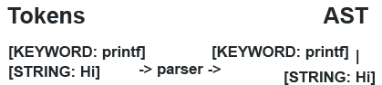

Made by risknu(short)
04.11.23
What is this interpreter of yours?
Let's not waste time on boring lectures or Wikipedia articles. Let's start right away by looking at interesting examples of what an interpreter is, how it works, and how to create our own programming language that can be interpreted.
First of all, it's important to note that interpreters are not always as fast as compilers. They work differently. For example, a compiler translates code into assembly code that is later executed by the processor, while an interpreter works differently. It interprets an Abstract Syntax Tree (AST), which we'll explore later, from code in another language that has already been compiled. Therefore, code in Python, for example, often runs slower than the equivalent code in C or C++.
Lexer

To create your own interpreter, you need to break down the code of your invented language into tokens. Tokens are usually found in a file, as in the case of CPython. If you look at the source code of CPython, you'll see that everything is written in uppercase. These are the future token types. A token is an object that contains information about something and its content or type. For example, let's break down this code snippet: printf "Hello World". In our tokenizer, each character is combined into tokens, and we should get the following output: [KEYWORD: printf][STRING: Hello World]. In Python, you can achieve this output using the magic method __repr__. If you're not familiar with magic methods, I recommend consulting the Python documentation.
The main task of the lexer is to create tokens that will be used in parsers.
Error System
The error system is a class Error with arguments error_context, error_fragment, and error_position. The error context is a description of the error, the error fragment is a piece of code where the error occurred, and the position is a class that contains position information. The error's name can be obtained using self.__class__.__name. It's recommended to study magic variables and methods, as they will help you on your journey.
Each error inherits from the Error class, for example, InvalidSyntaxError(Error).
Parser
The parser will help you create a programming language. For example, it converts tokens into an Abstract Syntax Tree (AST) or "Action Tree." It's recommended to understand what an AST is and choose what suits you. However, in this course, we will delve into AST in detail, as it's more commonly used. I will also prepare a detailed post on this in the near future. It's important to understand that AST is an abstract tree, and it is used to create a hierarchy that allows the interpreter to understand how to execute the instructions we've provided.
Interpreter
And finally, the interpreter executes code presented in the form of an AST. It follows the instructions specified in the AST and executes them according to the logic of your programming language.
What's Next?
Next, I recommend reading a couple of books or articles on this topic. You can also read articles written by me if they are available or watch videos. Additionally, you can check out my GitHub through the links below and explore a lot more on my forum.
Feel free to reach out if you have any more questions or need further guidance on this subject.